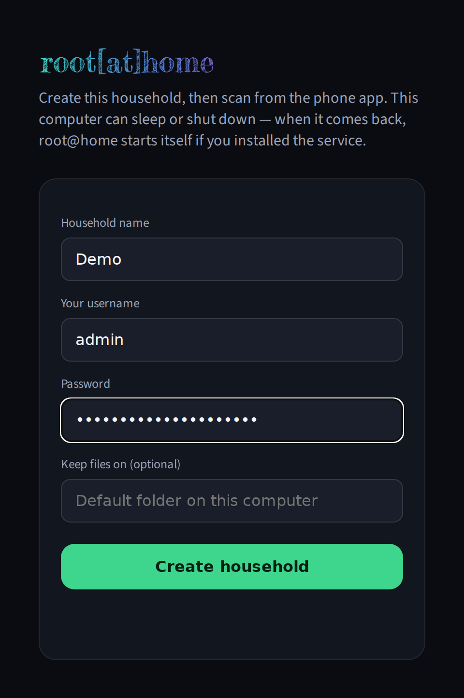
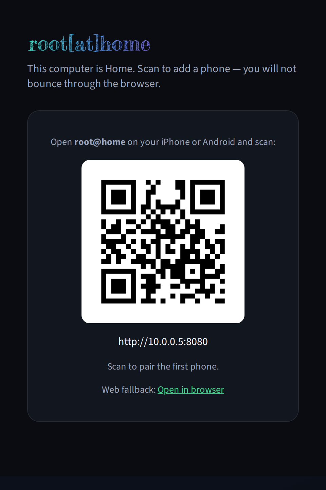
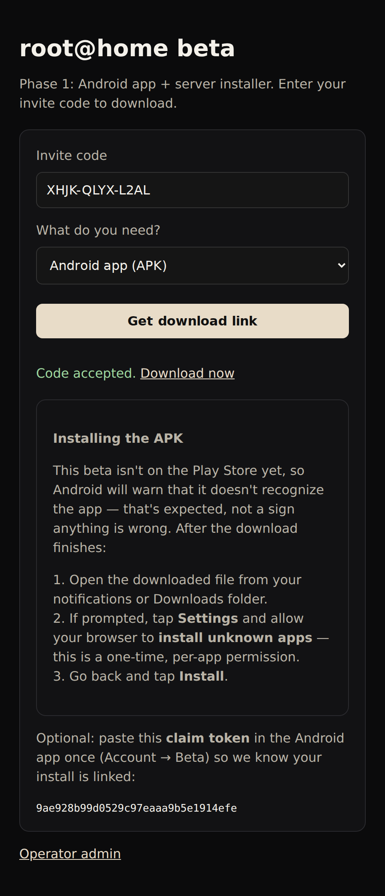
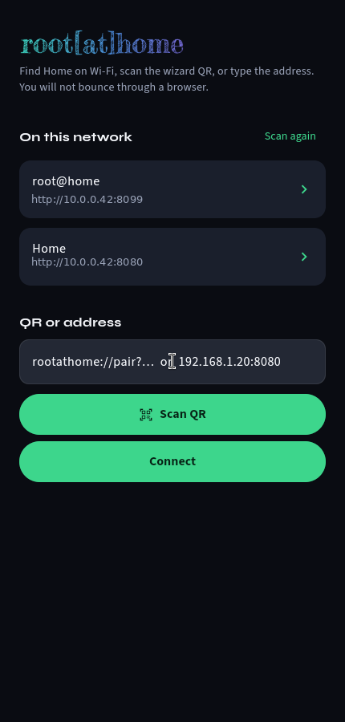
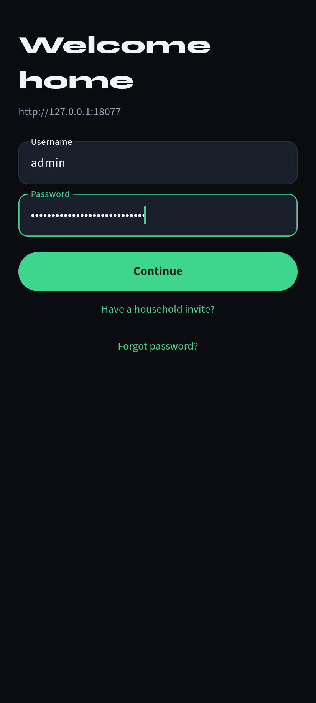
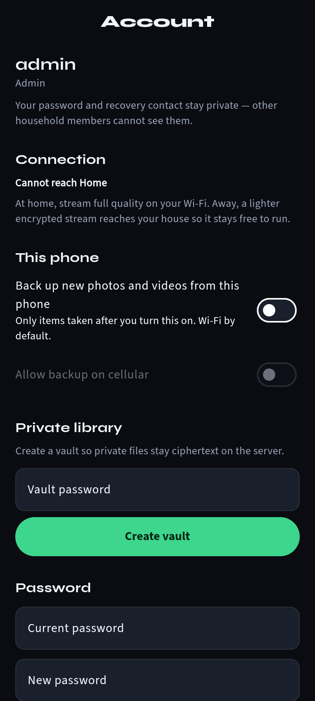
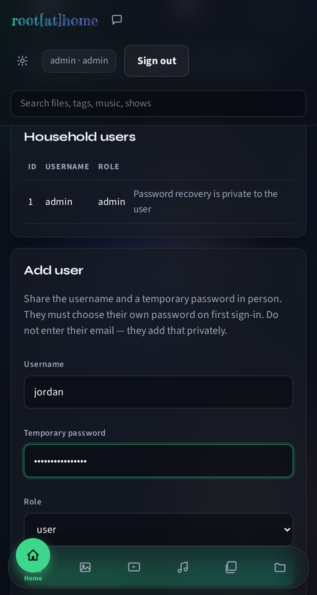
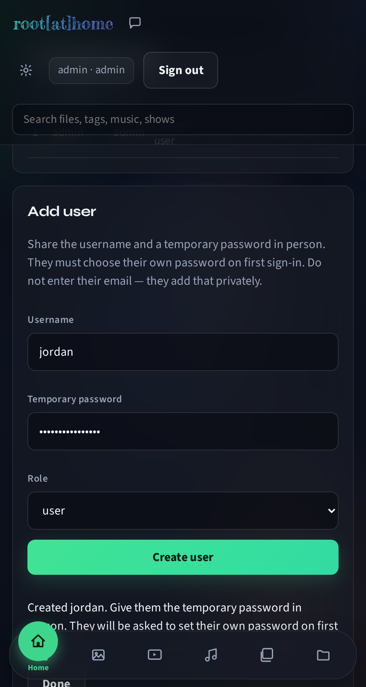
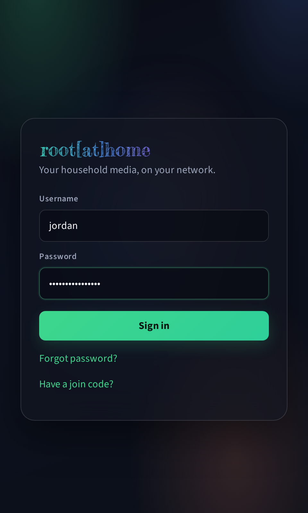
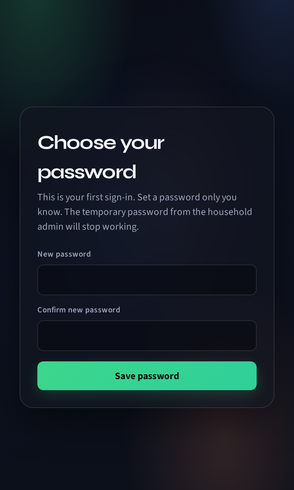

Setting up root@home
Everything your household needs for the beta: installing the server on a computer that stays on, and pairing your Android phone to it. About 10 minutes.
- A Mac, Windows PC, or Linux machine that can stay powered on and connected to your home Wi-Fi (or Ethernet) — this becomes Home.
- An Android phone on the same Wi-Fi network as that computer.
- Your beta invite code (from whoever invited you).
Part 1 — Install the server
Get the installer
- On the computer that will stay on, go to rootathome.diy and choose Get beta access.
- Enter your invite code and pick your computer's platform.
- Click the download link.
Run the installer
.pkg. It isn't notarized yet during the
beta, so Gatekeeper will say it's from an unidentified developer: right-click (or
Control-click) the file → Open → Open again to
confirm. It installs as a boot service and opens the setup page automatically.
.exe. SmartScreen will likely show
"Windows protected your PC" since it isn't code-signed yet during the beta — click
More info → Run anyway. Needs administrator rights
(it registers a Windows service) and opens the setup page automatically when done.
.deb
(sudo apt install ./rootathome_*.deb) or extract the .tar.gz and
follow the included instructions. Registers a boot service and opens the setup page if a
browser session is running.
If nothing opens automatically, open http://127.0.0.1:8080/setup yourself in
a browser on that same computer.
Create the household
You'll land on this page:

Click Create household and you'll see the pairing card:

Part 2 — Install the Android app
On the phone, open rootathome.diy in a mobile browser, enter the same invite code, and choose Android app (APK):

- Open the downloaded file from your notifications or Downloads folder.
- If prompted, tap Settings and allow your browser to install unknown apps — a one-time, per-app permission.
- Go back and tap Install.
Part 3 — Pair the phone to Home
Open root@home on the phone. If it's on the same Wi-Fi as the server, it usually finds it automatically:

If nothing shows up (common on guest Wi-Fi or a network that isolates devices from each other), type the address shown on the setup wizard page directly into QR or address and tap Connect.
Part 4 — Sign in
Sign in with the admin username and password you created in Part 1:

Part 5 — Turn on your private library
Recommended, not required. This encrypts anything you choose to keep in your private library end-to-end — the server only ever stores ciphertext for it.
In Account, under Private library, set a vault password:

You'll be shown a one-time recovery key — write it down somewhere safe. It's the only way back in if you forget the vault password, since the server never sees it either.
Part 6 — Add another household member
The admin account from Part 1 is the only one that exists so far. Anyone else — a partner, a kid, a roommate — needs their own account before they can sign in from their own phone or computer.
Open Admin (in the app, or in a browser at your server's address — the same one from Part 1's pairing card has an Open in browser link) and sign in as the admin. Under Add user, fill in a username and a temporary password, and pick a role — user for a regular household member, guest for someone who should have more limited access:

Click Create user:

Share the username and temporary password with them in person, not over chat or email — the temporary password only works once.
On their own device, they open root@home (the app, or the browser) and sign in with that username and temporary password:

Since it's their first sign-in, they're immediately asked to set their own password — the temporary one stops working the moment they do:

From here on, that's their own account: their own password, their own private library and vault password (Part 5), on whatever device they signed in from.
Troubleshooting
- Nothing shows up under "On this network."
- Some guest Wi-Fi and mesh routers isolate devices from each other, which blocks the discovery root@home relies on. Type the server's address directly (shown on the setup wizard page) instead — Ethernet on the server side is also more reliable than Wi-Fi for this.
- "Install blocked" on Android.
- You skipped the "install unknown apps" permission — open the downloaded file again and allow it when prompted.
- Forgot the vault password.
- Use the recovery key you saved in Part 5, from Account → Private library.
- Something else.
- Ask whoever sent you the invite code — they can check the server's own status page, or reach out to the beta operator.